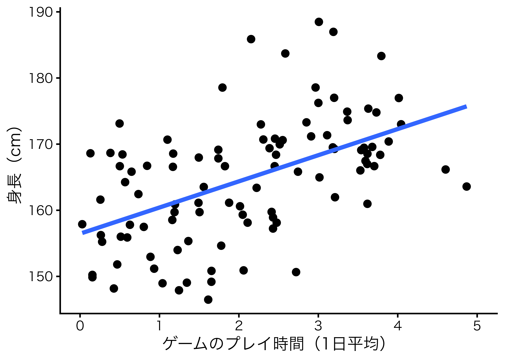
社会科学における因果推論
2/ 因果関係の考え方
1 1 相関と因果
1.1 因果関係
因果関係：原因（X）と結果（Y）の関係
- XがYを引き起こした
- 例）\(\bigcirc \bigcirc\)の当選（X）が戦争（Y）を引き起こした
- Xが増えたから、Yも増えた
- 例）食事量（X）を増やしたから、体重（Y）も増えた
- Xが小さくなったから、Yは大きくなった
- 例）金利（X）が下がったから、株価（Y）が上がった
- Xが高くなったから、Yは少なくなった
- 例）ストレス（X）が溜まったから、髪の毛（Y）が減った
1.2 果物消費量と鉄道会社の株価
アメリカにおける1世帯当たりと年間果物消費量とカナダ国鉄の株価の関係
- \(\rho\) = 0.986（p < 0.001）
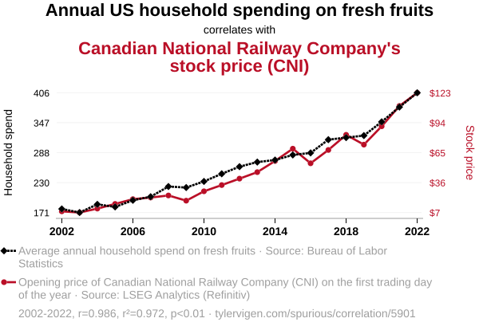
1.3 政治学者とスーパーマーケット
ワシントンDC内の政治学者数とWhole Foodsに対する顧客満足度の関係
- \(\rho\) = 0.856（p < 0.001）
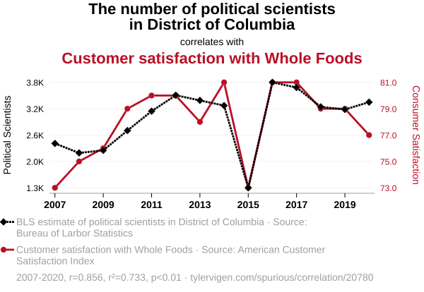
1.4 政策的含意
1.4.0.1 果物消費量と鉄道会社の株価
- 例1：我が社（カナダ国鉄）の株価を上げたい
- 解決策 \(\Rightarrow\) アメリカ人に新鮮な果物を無料で提供する
- 例2：我が国（アメリカ）の肥満率を下げるために、国民に果物をよりたくさん摂取してもらいたい
- 解決策 \(\Rightarrow\) カナダ国鉄の株を爆買いする
1.4.0.2 政治学者とスーパーマーケット
- 例：我が社（Whole Foods）に対する顧客満足度を高めたい
- 解決策 \(\Rightarrow\) 政治学者をDCに送り込む
1.5 様々な可能性
XがYの間に相関関係が存在する場合、XとYの間には因果関係が存在するのか
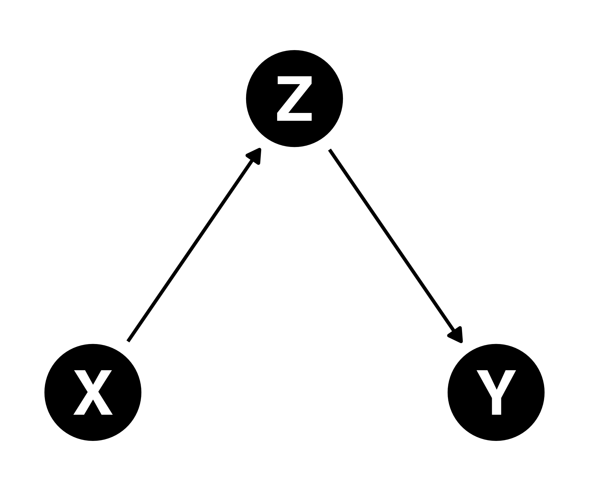
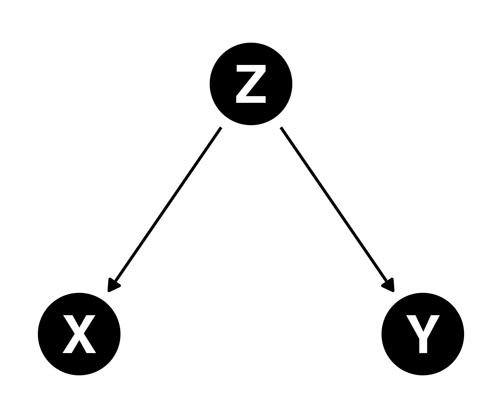
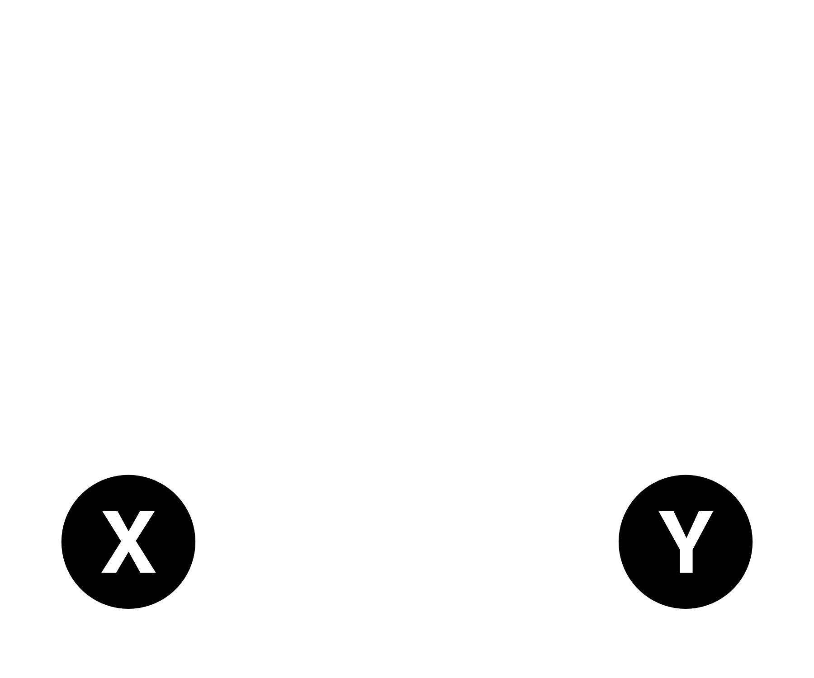
1.6 相関は因果の十分条件か
ゲームオタクほど身長が伸びる?
1.7 相関は因果の十分条件か：No!
性別で条件付けると因果効果は確認されない
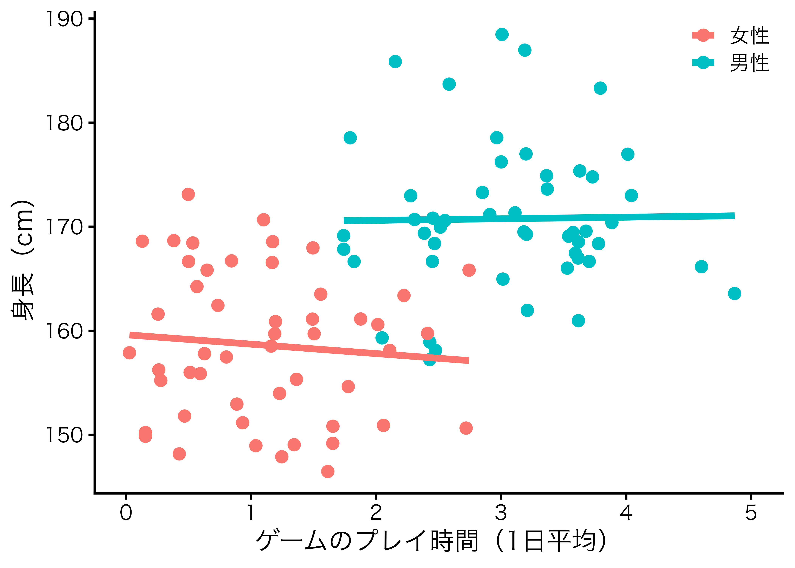
1.8 相関は因果の必要条件か
職業訓練を受けても年収は上がらない?
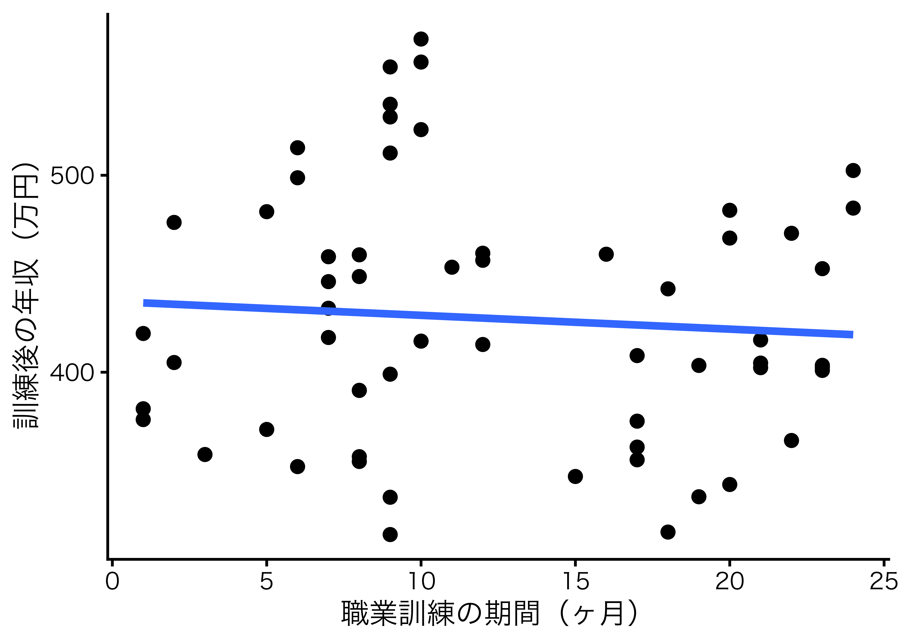
1.9 相関は因果の必要条件か：No!
訓練前の年収で条件付けると正の効果が確認できる
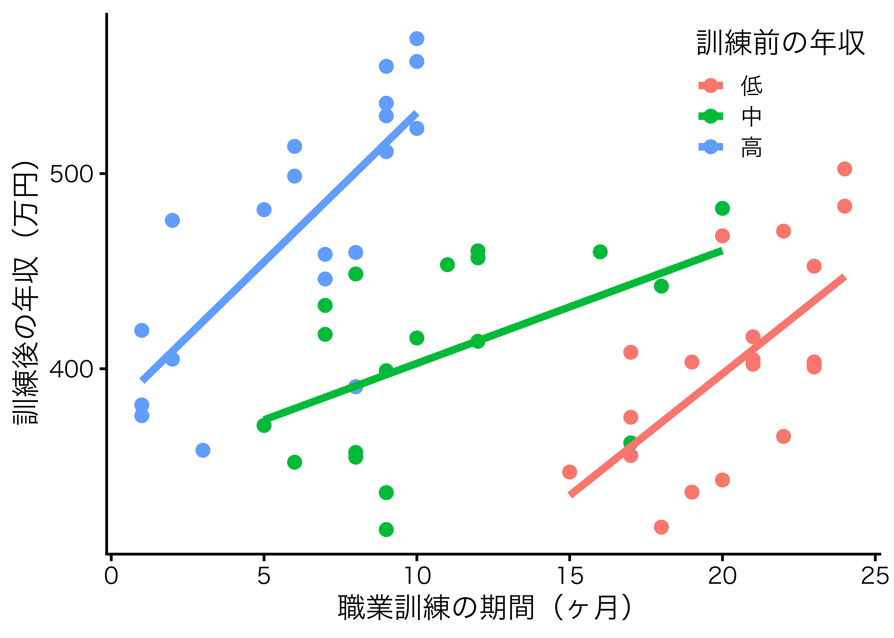
1.10 相関関係と因果関係
相関は因果の必要条件でも、十分条件でも、必要十分条件でもない
- 信頼できる因果推論のためには適切な条件付けに基づく比較が不可欠
- 条件付け（conditioning） / 統制（control）
- 特定の変数の値が一致するケースに限定すること
- 例）男性（女性）におけるゲームプレイ時間と身長の関係
“Conditioning is the soul of statistics” (Blitzstein and Hwang 2019, 46)
- 因果推論のための比較の方法
- A：1日ゲームプレイ時間が0分の男性の身長
- B：1日ゲームプレイ時間が300分の男性の身長
- AとBを比較する = 因果推論? \(\leftarrow\) Yes! But, …
2 2 比較と因果推論
2.1 因果推論スキルと年収
問い：因果推論スキルを身につければ年収が上がるか
- 原因：因果推論スキルの有無
- 例）宋さんの授業を履修したかどうか
- 結果：年収
- 例）卒業3年後の年収
2.2 宋に任せてください
宋さんの授業を履修すれば年収は上がるか
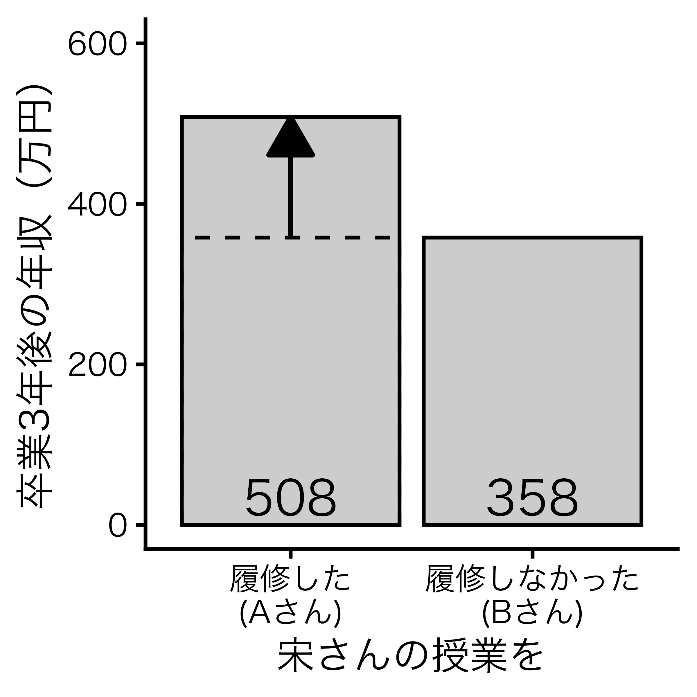
- 宋さんの授業を履修したAと履修しなかったBの比較
- 508 - 358 = 150
- 宋さんの授業には150万円の価値がある?
- \(\Rightarrow\) 宋さんの給与を2倍にすべき
- \(\Rightarrow\) 宋さんにノーベル賞を授与すべき
※ 個人の感想であり効果・効能を保証するものではありません。
2.3 本当に任せても良いのか
宋さんの授業を履修すれば年収は上がるか
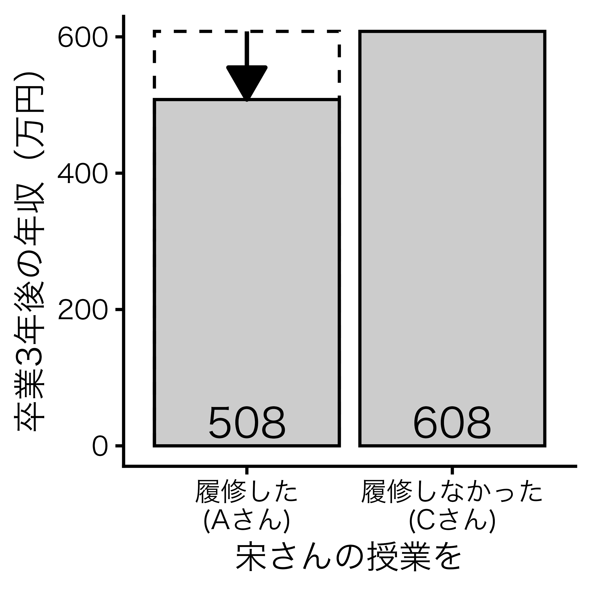
- 宋さんの授業を履修したAと履修しなかったCの比較
- 508 - 608 = -100
- 宋さんの授業は邪悪な授業?
- \(\Rightarrow\) これから頑張ってもらうために、宋さんの給与を2倍にすべき
- \(\Rightarrow\) これから頑張ってもらうために、宋さんにノーベル賞を授与すべき
- 宋さんは悪くない
2.4 何と何を比較するか
比較対象によって因果効果の推定値が異なる
2.5 なぜAさんは宋さんの授業を履修したか
なぜAさんは宋さんの授業を履修しようと思ったのか
- 理由1：宋さんのファンだから
- 理由2：宋さんがイケメンだから目の保養のために
- 理由3：この授業を履修すると年収が上がると思ったから
- 理由4：この授業を履修するように指導教員に脅迫されたから
- 理由5：気になる子が履修しているから
- 理由6：ノーベル因果推論賞を狙っているから
- 理由7：因果推論分からんやつにマウント取りたりから
- \(\Rightarrow\) すべて正しいと思われるが3、ここでは年収に関連する理由3に注目
2.6 Aさんの意思決定
理由3：この授業を履修すると年収が上がると思ったから
- 宋さんの授業を履修したら…
- 宋さんの授業を履修しなかった場合に比べ、年収が上がるはず!
- 宋さんの授業を履修しなかったら…
- 宋さんの授業を履修した場合に比べ、年収が下がるはず!
- Aさんは「履修をした場合の自分」と「履修をしなかった場合の自分」を比較し、履修を決定
- \(\Rightarrow\) Aさんはすでに履修してしまったので、Aさんの適切な比較対象は「履修をしなかった場合のAさん」
2.7 例）啓発活動と投票率
啓発活動は投票率を上げるか
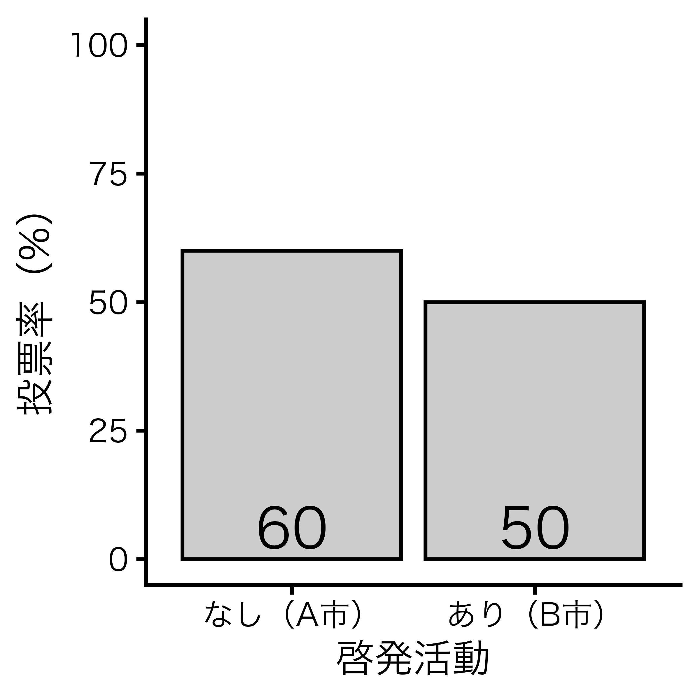
- 啓発活動によって投票率が10%p\(\downarrow\)?
- B市の適切な比較対象は?
- A市?
- 啓発活動をしなかった場合のB市?
2.8 B市の意思決定
なぜB市は予算を使ってまで啓発活動をしようと思ったのか
- 理由1：啓発活動をすれば投票率が上がると思ったから
- 理由2：元々の投票率が低すぎて何かしようと思ったから
- \(\Rightarrow\) 啓発活動をしたら何もしなかった場合に比べ、投票率が上がるはず!
- B市は「啓発活動をした場合のB市」と「啓発活動をしなかった場合のB市」を比較し、啓発活動の実施有無を決定
- \(\Rightarrow\) B市の適切な比較対象は「啓発活動をしなかった場合のB市」
2.9 例）ゲームのプレイ時間と身長
因果推論における理想の比較対象は「もし\(\bigcirc \bigcirc\)したら/しなかったら…」
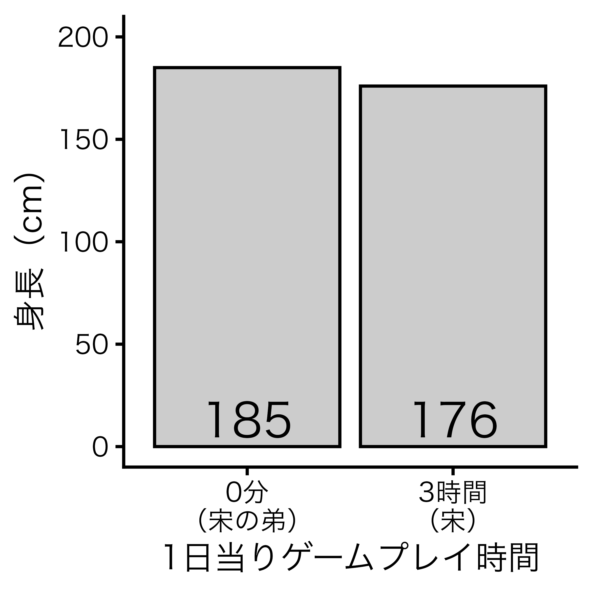
- 1日のゲームプレイ時間が3時間伸びると身長が9cm縮む?
- 宋の弟は宋の適切な比較対象か
- 幼少期の親の経済力
- 健康志向の程度
- …
- 宋の適切な比較対象は「ゲームを全くプレイしない宋4」
3 3 潜在的結果枠組み
3.1 潜在的結果枠組み（Potential outcome framework）
因果効果を潜在的結果間の差分として捉える考え方
- 2種類の潜在的結果
- 事実（factual）
- 反事実（counterfactual）
- 因果効果 = 事実と反事実の差分
3.2 表記法
3.3 潜在的結果（potential outcome）
特定の固定が処置を受けた/受けなかった場合の結果変数の値
- \(D_i = 0\)の場合：\(Y_i (0)\)は事実、\(Y_i (1)\)が反事実
- \(D_i = 1\)の場合：\(Y_i (0)\)が反事実、\(Y_i (1)\)は事実
| \(i\) | \(D_i\) | \(Y_i(0)\) | \(Y_i(1)\) |
|---|---|---|---|
| 1 | 0 | 344 | 444 |
| 2 | 0 | 455 | 505 |
| 3 | 0 | 479 | 379 |
| 4 | 1 | 404 | 554 |
| 5 | 1 | 295 | 395 |
| 6 | 1 | 298 | 248 |
3.4 因果効果の定義
個体レベルにおける処置効果（individual treatment effect; ITE）
- 全く同じ時点、かつ同じ個体における\(Y_i(1)\)と\(Y_i(0)\)の差分
\[ \textsf{ITE}_i = Y_i (1) - Y_i (0) \]
| \(i\) | \(D_i\) | \(Y_i(0)\) | \(Y_i(1)\) | \(\textsf{ITE}_i\) |
|---|---|---|---|---|
| 1 | 0 | 344 | 444 | 100 |
| 2 | 0 | 455 | 505 | 50 |
| 3 | 0 | 479 | 379 | -100 |
| 4 | 1 | 404 | 554 | 150 |
| 5 | 1 | 295 | 395 | 100 |
| 6 | 1 | 248 | 248 | 0 |
3.5 平均処置効果（1）
平均処置効果（average treatment effect; ATE）：ITEの平均
\[ \textcolor{red}{\textsf{ATE}} = \frac{1}{n} \sum_i^n \bigl( \textcolor{royalblue}{Y_i (1) - Y_i (0)} \bigr) = \mathbb{E}[Y_i(1)] - \mathbb{E}[Y_i(0)] \]
| \(i\) | \(D_i\) | \(Y_i(0)\) | \(Y_i(1)\) | \(\textsf{ITE}_i\) |
|---|---|---|---|---|
| 1 | 0 | 344 | 444 | ITE1 = 100 |
| 2 | 0 | 455 | 505 | ITE2 = 50 |
| 3 | 0 | 479 | 379 | ITE3 = -100 |
| 4 | 1 | 404 | 554 | ITE4 = 150 |
| 5 | 1 | 295 | 395 | ITE5 = 100 |
| 6 | 1 | 248 | 248 | ITE6 = 0 |
| 平均 | 370.8 | 420.8 | 50 |
3.6 平均処置効果（2）
平均処置効果（average treatment effect; ATE）：\(Y_i(1)\)の平均値 - \(Y_i(0)\)の平均値
\[ \textcolor{red}{\textsf{ATE}} = \frac{1}{n} \sum_i^n \bigl( Y_i (1) - Y_i (0) \bigr) = \textcolor{royalblue}{\mathbb{E}[Y_i(1)] - \mathbb{E}[Y_i(0)]} \]
| \(i\) | \(D_i\) | \(Y_i(0)\) | \(Y_i(1)\) | \(\textsf{ITE}_i\) |
|---|---|---|---|---|
| 1 | 0 | 344 | 444 | 100 |
| 2 | 0 | 455 | 505 | 50 |
| 3 | 0 | 479 | 379 | -100 |
| 4 | 1 | 404 | 554 | 150 |
| 5 | 1 | 295 | 395 | 100 |
| 6 | 1 | 248 | 248 | 0 |
| 平均 | \(\mathbb{E}[Y_i(0)]\) = 370.8 | \(\mathbb{E}[Y_i(1)]\) = 420.8 | 50 |
3.7 参考：処置群における平均処置効果（ATT）
統計的因果推論ではATTが推定対象となるケースも多い7
- ATT（Average Treatment Effect on the Treated; 処置群におけるATE）
- \(\mathbb{E}[Y_i(1) | D_i = 1] - \mathbb{E}[Y_i(0) | D_i = 1] = \mathbb{E}[Y_i(1) - Y_i(0) | D_i = 1]\)
- ATEはATTとATCの加重平均
| \(i\) | \(D_i\) | \(Y_i(0)\) | \(Y_i(1)\) | \(\textsf{ITE}_i\) |
|---|---|---|---|---|
| 4 | 1 | 404 | 554 | 150 |
| 5 | 1 | 295 | 395 | 100 |
| 6 | 1 | 248 | 248 | 0 |
| 平均 | 83.3 |
3.8 参考：統制群における平均処置効果（ATC）
統計的因果推論ではATTが推定対象となるケースも多い8
- ATC（Average Treatment Effect on the Controlled; 統制群におけるATE）
- \(\mathbb{E}[Y_i(1) | D_i = 0] - \mathbb{E}[Y_i(0) | D_i = 0] = \mathbb{E}[Y_i(1) - Y_i(0) | D_i = 0]\)
- ATEはATTとATCの加重平均
| \(i\) | \(D_i\) | \(Y_i(0)\) | \(Y_i(1)\) | \(\textsf{ITE}_i\) |
|---|---|---|---|---|
| 1 | 0 | 344 | 444 | 100 |
| 2 | 0 | 455 | 505 | 50 |
| 3 | 0 | 479 | 379 | -100 |
| 平均 | 16.7 |
3.9 因果推論の根本問題（fundamental problem of causal inference）
反事実は観察できないため、ITEの推定は不可能
- \(\leadsto\) ITEの平均値としてのATEは推定不可能
| \(i\) | \(D_i\) | \(Y_i(0)\) | \(Y_i(1)\) | \(\textsf{ITE}_i\) |
|---|---|---|---|---|
| 1 | 0 | 344 | ? | |
| 2 | 0 | 455 | ? | |
| 3 | 0 | 479 | ? | |
| 4 | 1 | 554 | ? | |
| 5 | 1 | 395 | ? | |
| 6 | 1 | 248 | ? | |
| 平均 | ? |
3.10 因果推論の根本問題と事実・反事実
| \(Y_i(0)\) | \(Y_i(1)\) | |
|---|---|---|
| \(D_i = 0\) | 1. \(Y_i(0|D_i = 0)\) | 2. \(Y_i(1|D_i = 0)\) |
| \(D_i = 1\) | 3. \(Y_i(0|D_i = 1)\) | 4. \(Y_i(1|D_i = 1)\) |
- \(Y_i(0 | D_i = 0)\)：統制群の個体\(i\)が処置を受けなかった場合の\(Y_i\) \(\rightarrow\) 事実
- 統制群における\(Y_i(0)\)は観察可能 \(\leadsto\) \(\mathbb{E}[Y_i(0 | D_i = 0)]\)も計算可能
- \(Y_i(1 | D_i = 0)\)：統制群の個体\(i\)が処置を受けた場合の\(Y_i\) \(\rightarrow\) 反事実
- 統制群における\(Y_i(1)\)は観察不可能 \(\leadsto\) \(\mathbb{E}[Y_i(1 | D_i = 0)]\)も計算不可能
- \(Y_i(0 | D_i = 1)\)：処置群の個体\(i\)が処置を受けなかった場合の\(Y_i\) \(\rightarrow\) 反事実
- 処置群における\(Y_i(0)\)は観察不可能 \(\leadsto\) \(\mathbb{E}[Y_i(0 | D_i = 1)]\)も計算不可能
- \(Y_i(1 | D_i = 1)\)：処置群の個体\(i\)が処置を受けた場合の\(Y_i\) \(\rightarrow\) 事実
- 処置群における\(Y_i(1)\)は観察可能 \(\leadsto\) \(\mathbb{E}[Y_i(1 | D_i = 1)]\)も計算可能
3.11 因果推論の根本問題とATE
観測値の平均値の差分は計算可能
- \(\mathbb{E}[Y_i(1)] - \mathbb{E}[Y_i(0)]\)でなく、\(\mathbb{E}[Y_i(1 | D_i = 1)] - \mathbb{E}[Y_i(0 | D_i = 0)]\)は計算可能
- これはATE? \(\Rightarrow\) Maybe not…
| \(i\) | \(D_i\) | \(Y_i(0)\) | \(Y_i(1)\) | \(\textsf{ITE}_i\) |
|---|---|---|---|---|
| 1 | 0 | 344 | ? | |
| 2 | 0 | 455 | ? | |
| 3 | 0 | 479 | ? | |
| 4 | 1 | 554 | ? | |
| 5 | 1 | 395 | ? | |
| 6 | 1 | 248 | ? | |
| 平均 | \(\mathbb{E}[Y_i(0 | D_i = 0)]\) = 426 | \(\mathbb{E}[Y_i(1 | D_i = 1)]\) = 399 | -27 |
3.12 信頼できるATEの条件
私たちが本当に知りたいのはITE9
- 因果推論の根本問題により、ITEは推定不可能
- 観測値の平均値の差分としてのATEは推定可能
- ただし、この推定値が信頼できるATEとは限らない
- どのような場合、観測値の平均値の差分は信頼できるATEになるか
- \(\Rightarrow\) 内生性が存在しないこと
\(=\) 処置変数が外生変数であること
\(=\) 処置群と統制群が交換可能、または（平均）独立であること
- \(\Rightarrow\) 内生性が存在しないこと
3.13 参考文献
Blitzstein, Joseph K., and Jessica Hwang. 2019. Introduction to Probability, Second Edition. Second. Chapman; Hall/CRC.